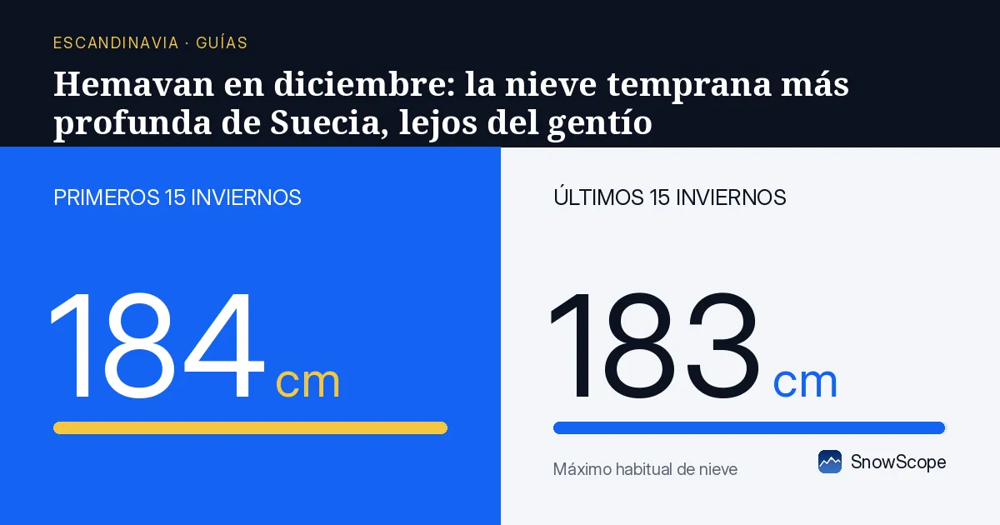

Hemavan en diciembre: la nieve temprana más profunda de Suecia, lejos del gentío
Hemavan se sitúa en las montañas suecas cerca de la frontera noruega y acumula nieve en diciembre más profunda que cualquier estación nórdica que hayamos comparado. El 15 de diciembre típico, la media montaña (799 m) mantiene 82 cm, y en cada uno de nuestros 46 inviernos de registros esa altura tuvo nieve de 30 cm o más profunda en la semana antes de Navidad.
Consulta la previsión de nieve en tiempo real de Hemavan en la app SnowScopeEspesor de nieve, alertas de nieve polvo y mapa 3D, gratis.
Por qué diciembre aquí supera a los Alpes y otras áreas nórdicas
La fortaleza de Hemavan es la altitud combinada con la latitud. La base está a 462 m, la media montaña a 799 m y la cima a 1136 m. Ese rango de desnivel captura nieve en cada nivel, y muy al norte en la Laponia sueca, la nieve de diciembre es fiable. A media altura, el 100 % de nuestros 46 inviernos tuvieron 30 cm o más desde el 8 de diciembre en adelante. En la cima fue todos los inviernos en cada semana de diciembre.
Compara esto con Åre, la estación más grande de Suecia: la media montaña de Åre (853 m) tuvo solo 40 cm el 15 de diciembre típico, y la cobertura de nieve a mediados de diciembre fue segura en el 89 % de los inviernos allí, no el 100 %. Para esquiadores quemados por diciembres finos en otros lugares, Hemavan ofrece certeza.


La base es la apuesta; media montaña y cima son seguras
Principios de diciembre a nivel de base (462 m) no fue garantizado: el 78 % de los inviernos tuvieron 30 cm o más en la primera semana. Pero a partir del 8 de diciembre en adelante, la cobertura saltó al 89 %, luego al 91 % a la semana de Navidad. Si llegas antes del 8 de diciembre, quédate más arriba. La media montaña y la cima tuvieron cobertura en todos los inviernos desde principios de diciembre durante todo el mes.
En la semana de Navidad en sí, el cuadro de profundidad mejora en todas partes. La base típicamente mantuvo 62 cm el 24 de diciembre; media montaña 93 cm; la cima 128 cm. En el 96 % de nuestros inviernos, la media montaña tuvo 60 cm o más en la semana de Navidad—auténtico territorio de polvo.
Agua almacenada en altura, liberada en primavera
La nieve profunda de diciembre aquí no es solo para esquiar; es agua almacenada en las montañas. Ese manto de nieve suele durar hasta la primavera porque el mes más profundo a media montaña es abril, cuando la profundidad típica alcanza 161 cm. El invierno pasado, mientras muchas estaciones alpinas se debatían, Hemavan mantuvo 88 cm a media montaña el 15 de diciembre y siguió acumulando.
La tendencia a largo plazo muestra un ligero cambio. La profundidad de diciembre a media montaña promedió 89 cm en los primeros 15 inviernos de nuestros registros pero 81 cm en los últimos 15 inviernos. Sin embargo, incluso en años recientes, cada semana de Navidad tuvo 30 cm allí. La nieve es resiliente.
Área pequeña, gran beneficio: menos gente, bajo coste
Hemavan tiene 37 km de pistas marcadas y 9 remontes. No es un destino para buscadores de tamaño. Es una estación de pueblo, tranquila antes de Navidad, lejos de las principales ciudades suecas e incluso más lejos de los aeropuertos internacionales. La compensación vale la pena si valoras polvo y paz sobre extensión y vida nocturna.
Los precios de los forfaits se venden dinámicamente en línea, y no pudimos confirmar una tarifa fija el 13 de noviembre de 2026. Consulta la tienda oficial del operador para la semana que elijas. La logística de viaje importa aquí más que en una estación de baja altitud: planifica tu viaje con tiempo, porque el norte de Suecia tiene vuelos limitados y transferencias largas en invierno.
Qué semana, qué altura, qué pistas
Cualquier semana de mediados de diciembre a finales de diciembre funciona a media montaña y superiores. Si debes esquiar la base, llega a partir del 8 de diciembre en adelante. La cima (1136 m) es segura para nieve desde el inicio del mes y recibe la mayor cantidad: 112 cm típico el 15 de diciembre, 139 cm para Fin de Año.
El sitio se encuentra en un terreno donde el esquí fuera de pista es tentador y arriesgado. La nieve profunda y las laderas de montaña empinadas crean peligro de avalancha. Antes de aventurarte más allá de las pistas marcadas, lee el pronóstico de avalancha sueco de Lavinprognoser y lleva equipo de seguridad adecuado.
Consejos para esquiadores
- Media montaña y cumbre son seguras para nieve desde el 1 de diciembre. La base es más segura desde el 8 de diciembre en adelante.
- Visita en la semana de Navidad para la nieve más profunda: media montaña típicamente tiene 93 cm el 24 de diciembre.
- Reserva tu viaje y acceso a remontes con tiempo; el norte de Suecia tiene pocos vuelos en invierno y transferencias largas.
- El terreno fuera de pista es tentador pero peligroso. Consulta el boletín de avalancha sueco antes de ir fuera de pista, y lleva baliza, sonda y pala.
- Esta es una escapada tranquila de estación pequeña, no una estación para esquiadores que necesitan variedad y après-ski todas las noches.
Sobre estas cifras
Los espesores de nieve de las estaciones son la nieve más profunda en las pistas altas en la fecha indicada; son estimaciones para una zona, no una medida en un punto. Las previsiones pueden cambiar. Consulta siempre el boletín oficial de aludes antes de salir fuera de pista.
Boletines oficiales de aludes: Lavinprognoser (Naturvårdsverket)
Citar este informe
Para investigación, docencia o prensa: cifras y gráficos reutilizables libremente bajo CC BY 4.0 con esta cita.
SnowScope (2026), Hemavan en diciembre: la nieve temprana más profunda de Suecia, lejos del gentío, https://snowscope.app/blog/es/2026/11/hemavan-december-skiing-lapland-deep-snow-budget.html, consultado el 2026-11-14
SnowScope (Atlas Labs). (2026, November 14). Hemavan en diciembre: la nieve temprana más profunda de Suecia, lejos del gentío. SnowScope snow reports. https://snowscope.app/blog/es/2026/11/hemavan-december-skiing-lapland-deep-snow-budget.html
BibTeX
@misc{snowscope2026hemavandecemberskiinglap,
author = {{SnowScope (Atlas Labs)}},
title = {Hemavan en diciembre: la nieve temprana más profunda de Suecia, lejos del gentío},
year = {2026},
month = nov,
howpublished = {\url{https://snowscope.app/blog/es/2026/11/hemavan-december-skiing-lapland-deep-snow-budget.html}},
note = {Published 2026-11-14 15:34 UTC; accessed 2026-11-14}
}· CC BY 4.0 · Métodos, datos y herramientas →
Hemavan: nieve y temperatura según la altura, este invierno vs el pasado (herramientas) →
Sigue Hemavan
Gratis: un aviso cuando llega la nieve y la previsión cada mañana.